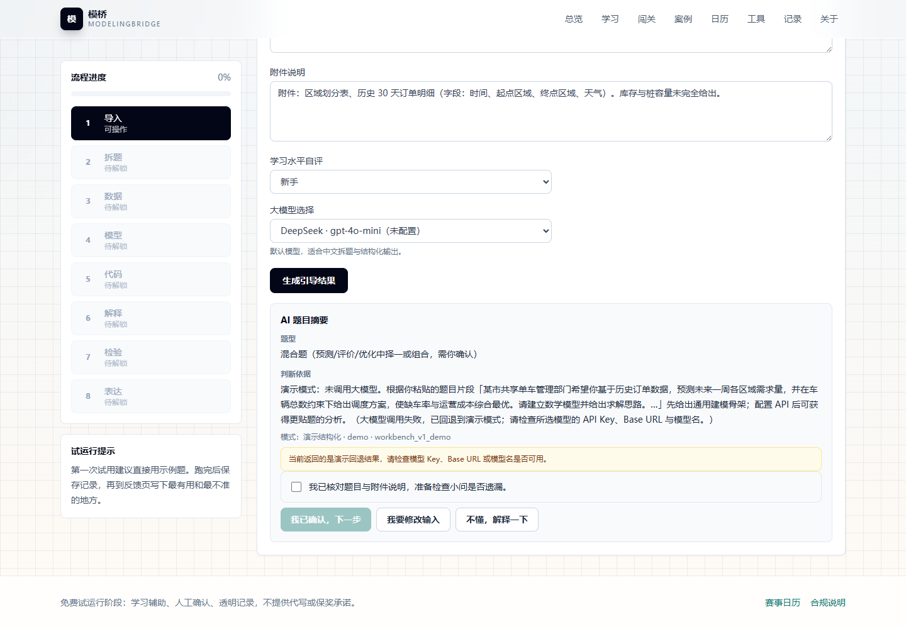

模MODELINGBRIDGE · 模桥
AI-GUIDED MODELING
From a messy problem to a testable model.
Frame · Choose · Build · Validate

LEARNER IN CONTROLEight explicit steps. Human confirmation at every handoff.
AI-GUIDED MODELING
Frame · Choose · Build · Validate
